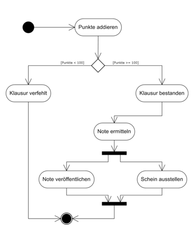

Workflow Daten (Zustands-Automat) Aktivitätsdiagramm Antrag NEU (Start) <-------------------+ | | | | +----------> Antrag ABGELEHNT -----+---> Antrag STORNIERT (Stop) | | Antrag ANGENOMMEN (Stop)  Quelle: Wikipedia